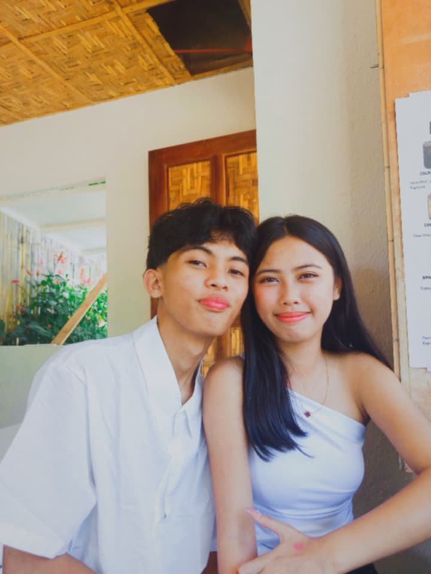
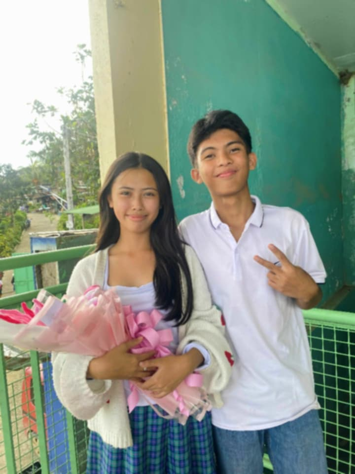
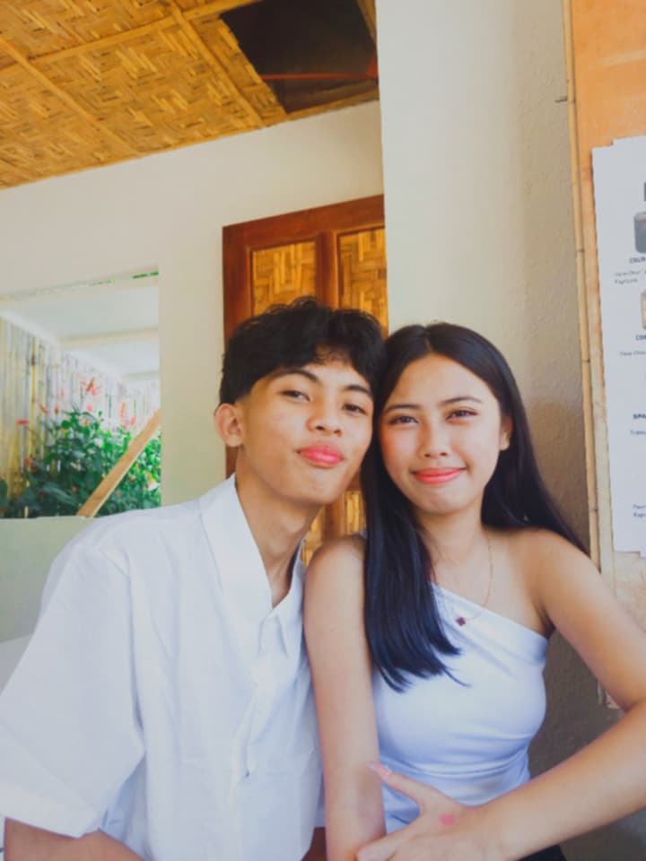
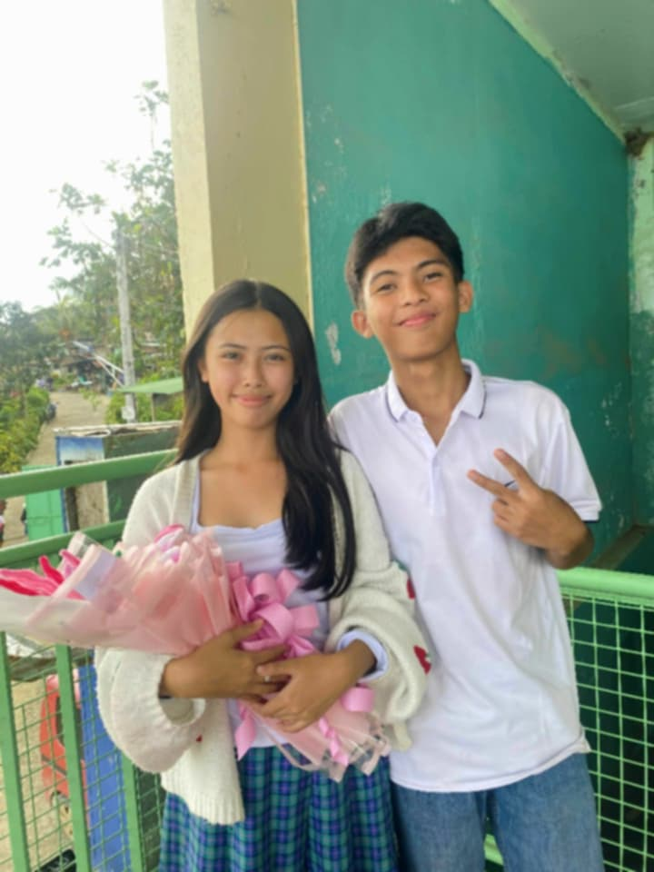

Merry Christmas Mylove 💖✨
To my baby, my love, my everything
MERRY CHRISTMAS MYLOVEE First of all i want to thankyouuu for staying at my lifee even if kiat kaayo koo pating and luoran but bisag naagian na nmo nga attitude nakoo you fight for our rs poo and also I'm so proud for youuu kay imong gisulti nga imong i try nga dili dali mo givee up kay imong gipa show gyud nakoo loveee tas imong gibuhat tanan to be better gf poo, I'll appreciate it soomuchhh pooo hopefully dili napoo ka mausab lovee your the best gift ever nakoo sa Christmas looveee, ang makauban kas Christmas is part of the best lifee ever nga akong na experience imagine that wee encounter many challenges in our lifee specially in our rs poo buwag balik ta loveee but i am soo happy kay even if gibuwag tas tadhana mangita pud og balik si lord para magbalik ta loveee all my prayers katong nag buwag ta is gitinuod ni lord and thankfull kaayo koo bisag sauna lovee katong unang Christmas dili pamn ta uyab ato lovee we are strangers poo but lingaw lang kaayo to nga kingkoy kaayo ko kay gi first movee ba naman ang Merry Christmas HAHAHAHAHAH hasta koo nag imagine karon malingaw kos akong self but wlaa man gyud ta kabuot ato loveee bisag ako poo i just follow what i want to do ato poo and mao to ang i first movee ang Merry Christmas but it works poo kay if wla pakoo niabot ato mag suffer poo ka sa usa ka man nga wlay nindot nga ikahatag sa imong lifee poo a redflag man no he is not a man base sa akong nadunggan nakoo nmo ato about niya he is not a man he is a boy and ang pasakitan poo ka is dili nakoo kaya becausee i never hurt you likee he did, sometimes mapasakitan tka through action just because of jealous or mapasakitan tka sometimes through ignoring you and not saying anywords poo but i regret it all becausee that's the reason atong una nga mag break poo ta just becausee of my jealousy maguba poo ta soo mao to ni promisee kos akong self nga controlon nako akong jealous and mo tell dayun nmo if naay problem,thankkyouuuuuu loveloveeee for coming in my lifee you makee me happyy all day even if isulti lang nato na mag sgyyy rakog clingy nmo but wla poo ka kabalo kong unsa koo ka happy ana i feel comfortable and happyy actually wla nakoy lain pang hunahunaon ana nga time kay i know naa naka sa akong side all of pain that i felt,all problems, all sadness or unsa pana diha loveee is mawala gyud pooo dayun I'll promisee and usa pud kanang imong insecuree lovelovee i know being insecure is not easy but all i can say is naa rako always para mo help nmo ana i will compliment youuu all day and kana akong pag compliment nmo loveee is not a jwk poo or atik all of my compliments is tinuod poo you aree beatiful likee a sunset imagine mag tan aw kas sunset diba nindot poo kaayo tas picturan dayun nmo your likee a sunset becausee everytimee i look at youuu i admiree your face and feel nakoo mo stop akong world og mga pila ka minutes likee your so pretty gyud poo I'll promisee hopefully imo poo nang ma accept peroo dapat nakooo ra HAHHAHAHAHHA As alwaysss pooo HAPPYYYHAPYYYYY MERRYYY CHRISTMAS LOVELOVE i will alwayss lovee youuu don't think that i will leave youuu poo or i will cheat nooo dili poo na mahitabo i will fight for our rs loveee i will fight you until the last and lovelovee if youu havee unsaid thoughts or problem pleaseee sultii poo koo cause naa rako always dri I'm your kakampii always.Im your partner pooo,and your best friend,your boy best friend,and soo onn pa alwayss rakong naa dri para nmo I'll promisee sa imong mga parents na ampingan tka,i lovee ka and i treat kag tarong loveloveee HAPPYHAPPY MERRY CHRISTMAS POOO LOVEE Iloveyouuusoomuchhh pooo mwahhhhhmwahhhhh😚😚
 


